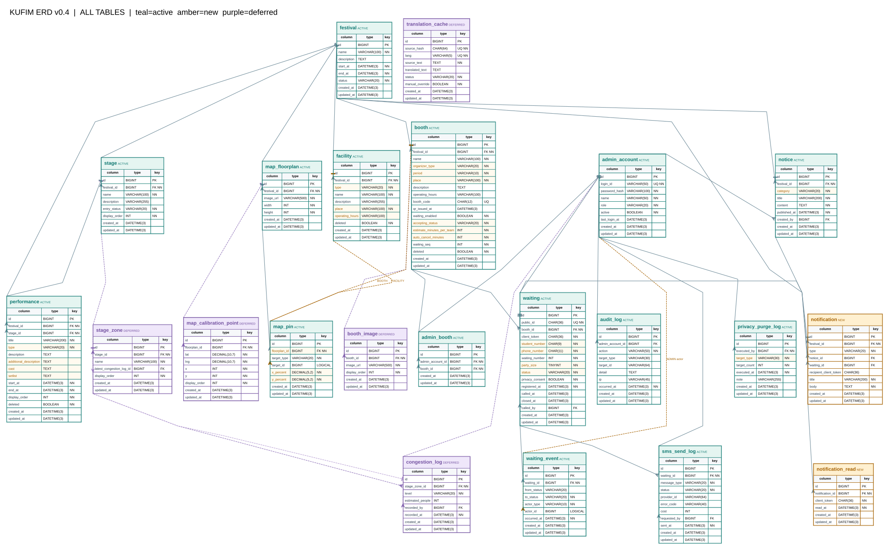

| 항목 | 내용 |
|---|---|
| 문서 버전 | v0.4 |
| 작성일 | 2026-10-08 |
| DBMS | MySQL 8.0 / utf8mb4 |
| 테이블 수 | 적용 20 (JPA 엔터티 17 + 웨이팅 보조 3) · 보류 5 |
| DDL | src/main/resources/db/migration/V1 ~ V5 |
| 관계도 | erd-v0.4.svg (전체도) · erd-v0.4.pdf (전체 + 영역별 확대 4쪽) |
id BIGINT와 public_id CHAR(36)(UUID)을 함께 갖는다. API 경로와 WebSocket 토픽에는 public_id만 쓴다.active_waiting의 PK를 client_token으로 두어, 동시 요청이 와도 한 토큰에 활성 표가 둘 생기지 않는다 (§3.12).performance, booth, facility, notice는 deleted 컬럼을 둔다.waiting_event, sms_send_log, audit_log, privacy_purge_log는 UPDATE·DELETE 하지 않는다.festival_id는 단일 축제여도 유지한다. 다른 테이블의 공통 기준이며, 멀티 이벤트 확장 시 분기점이 된다.공통 컬럼 — 모든 테이블(§3.12 ~ §3.14 보조 테이블 제외)은 아래 컬럼을 갖는다. §3에서는 반복 기재하지 않는다.
| 컬럼 | 타입 | 제약 | 설명 |
|---|---|---|---|
id |
BIGINT | PK, AI | |
created_at / updated_at |
DATETIME(3) | NOT NULL | JPA Auditing이 기록 (common/entity/BaseEntity) |

색상: 청록 = 적용, 주황 = 신규, 보라 = 보류. SVG는 2026-10-08 설계 시점 그림이다. 이후 추가된
active_waiting,waiting_idempotency,waiting_call_idempotency와 V2 ~ V5 컬럼은 아래 2.2 다이어그램과 §3 표를 기준으로 한다.
erDiagram
FESTIVAL ||--o{ STAGE : "포함"
FESTIVAL ||--o{ PERFORMANCE : "포함"
FESTIVAL ||--o{ BOOTH : "포함"
FESTIVAL ||--o{ FACILITY : "포함"
FESTIVAL ||--o{ MAP_FLOORPLAN : "포함"
FESTIVAL ||--o{ NOTICE : "포함"
FESTIVAL ||--o{ NOTIFICATION : "포함"
STAGE ||--o{ PERFORMANCE : "무대 배정"
BOOTH ||--o{ WAITING : "대기 접수"
BOOTH ||--o{ ADMIN_BOOTH : "담당 배정"
WAITING ||--o{ WAITING_EVENT : "상태 전이 이력"
WAITING ||--o{ SMS_SEND_LOG : "문자 발송"
WAITING ||--o| ACTIVE_WAITING : "활성 표"
WAITING ||--o{ WAITING_IDEMPOTENCY : "등록 재시도"
WAITING ||--o{ WAITING_CALL_IDEMPOTENCY : "호출 재시도"
WAITING ||--o{ NOTIFICATION : "호출 알림"
NOTICE ||--o{ NOTIFICATION : "공지 알림"
NOTIFICATION ||--o{ NOTIFICATION_READ : "읽음"
MAP_FLOORPLAN ||--o{ MAP_PIN : "핀"
ADMIN_ACCOUNT ||--o{ ADMIN_BOOTH : "담당"
ADMIN_ACCOUNT ||--o{ NOTICE : "작성"
ADMIN_ACCOUNT ||--o{ WAITING : "호출·종료"
ADMIN_ACCOUNT ||--o{ SMS_SEND_LOG : "재발송"
ADMIN_ACCOUNT ||--o{ AUDIT_LOG : "조작"
ADMIN_ACCOUNT ||--o{ PRIVACY_PURGE_LOG : "실행"
FESTIVAL {
bigint id PK
varchar name
varchar location
datetime start_at
datetime end_at
varchar status
}
STAGE {
bigint id PK
bigint festival_id FK
varchar name
varchar entry_status
int display_order
}
PERFORMANCE {
bigint id PK
bigint festival_id FK
bigint stage_id FK
varchar title
varchar type
text cast_members
text setlist
datetime start_at
datetime end_at
boolean deleted
}
BOOTH {
bigint id PK
bigint festival_id FK
varchar name
varchar organizer_type
varchar period
char booth_code UK
boolean waiting_enabled
varchar accepting_status
int estimate_minutes_per_team
int auto_cancel_minutes
boolean deleted
}
FACILITY {
bigint id PK
bigint festival_id FK
varchar type
varchar name
varchar place
boolean deleted
}
MAP_FLOORPLAN {
bigint id PK
bigint festival_id FK
varchar image_url
int width
int height
}
MAP_PIN {
bigint id PK
bigint floorplan_id FK
varchar target_type
bigint target_id
decimal x_percent
decimal y_percent
}
NOTICE {
bigint id PK
bigint festival_id FK
varchar category
varchar title
datetime published_at
boolean deleted
}
WAITING {
bigint id PK
char public_id UK
bigint booth_id FK
char client_token
char student_number
char phone_number
int waiting_number
tinyint party_size
varchar status
datetime called_at
datetime auto_cancel_at
int recall_count
varchar close_reason
}
ACTIVE_WAITING {
char client_token PK
bigint waiting_id FK
}
WAITING_IDEMPOTENCY {
char client_token PK
varchar request_key PK
bigint waiting_id FK
}
WAITING_CALL_IDEMPOTENCY {
bigint waiting_id PK
varchar request_key PK
}
WAITING_EVENT {
bigint id PK
bigint waiting_id FK
varchar from_status
varchar to_status
varchar actor_type
datetime occurred_at
}
SMS_SEND_LOG {
bigint id PK
bigint waiting_id FK
varchar message_type
varchar status
int cost
datetime sent_at
}
NOTIFICATION {
bigint id PK
bigint festival_id FK
varchar type
bigint notice_id FK
bigint waiting_id FK
char recipient_client_token
}
NOTIFICATION_READ {
bigint id PK
bigint notification_id FK
char client_token
datetime read_at
}
ADMIN_ACCOUNT {
bigint id PK
varchar login_id UK
varchar role
boolean active
int session_version
}
ADMIN_BOOTH {
bigint id PK
bigint admin_account_id FK
bigint booth_id FK
}
AUDIT_LOG {
bigint id PK
bigint admin_account_id FK
varchar action
datetime occurred_at
}
PRIVACY_PURGE_LOG {
bigint id PK
bigint executed_by FK
varchar target_type
int target_count
datetime executed_at
}
festival 1 ── N stage / performance / booth / facility / map_floorplan / notice / notification
stage 1 ── N performance
admin_account 1 ── N admin_booth N ── 1 booth
booth 1 ── N waiting 1 ── N waiting_event / sms_send_log
waiting 1 ── 0..1 active_waiting (활성 상태일 때만 행 존재)
waiting 1 ── N waiting_idempotency / waiting_call_idempotency
map_floorplan 1 ── N map_pin ── 0..1 booth 또는 facility (다형 참조, FK 없음)
notice 1 ── N notification 1 ── N notification_read
waiting 1 ── N notification
admin_account 1 ── N notice / audit_log / privacy_purge_log
festival — 축제엔터티
Festival· APIGET /festival
| 컬럼 | 타입 | 제약 | 설명 |
|---|---|---|---|
name |
VARCHAR(100) | NOT NULL | 축제명 |
description |
TEXT | NULL | 소개 |
location |
VARCHAR(200) | NULL | 장소 (V2 추가) |
start_at / end_at |
DATETIME(3) | NOT NULL | 축제 기간 |
status |
VARCHAR(20) | NOT NULL | BEFORE ONGOING ENDED |
본 학기에는 레코드 1건만 운영한다. FE의 DAY 1/2는 이 기간에서 매핑한다.
admin_account — 관리자 계정엔터티
AdminAccount· API/admin/auth/*,/admin/accounts
| 컬럼 | 타입 | 제약 | 설명 |
|---|---|---|---|
login_id |
VARCHAR(50) | NOT NULL, UNIQUE | 로그인 ID |
password_hash |
VARCHAR(100) | NOT NULL | BCrypt 해시 |
name |
VARCHAR(50) | NOT NULL | 표시명 |
role |
VARCHAR(20) | NOT NULL | SUPER_ADMIN BOOTH_ADMIN |
active |
BOOLEAN | NOT NULL | 비활성화(논리 삭제) |
last_login_at |
DATETIME(3) | NULL | |
session_version |
INT | NOT NULL, DEFAULT 0 | 강제 로그아웃 시 증가. 이전 세션 무효화 (V3 추가) |
admin_booth — 계정·부스 담당 매핑엔터티
AdminBooth
| 컬럼 | 타입 | 제약 |
|---|---|---|
admin_account_id |
BIGINT | NOT NULL, FK → admin_account |
booth_id |
BIGINT | NOT NULL, FK → booth |
UNIQUE (admin_account_id, booth_id) — uk_admin_boothBOOTH_ADMIN의 담당 부스 권한 검사는 이 테이블로 수행한다.stage — 무대엔터티
Stage· APIGET /stages,/admin/stages
| 컬럼 | 타입 | 제약 | 설명 |
|---|---|---|---|
festival_id |
BIGINT | NOT NULL, FK | |
name |
VARCHAR(100) | NOT NULL | 예: 메인 무대 |
description |
VARCHAR(255) | NULL | 위치 설명 |
entry_status |
VARCHAR(20) | NOT NULL | OPEN RESTRICTED |
display_order |
INT | NOT NULL | 화면 정렬 |
홈의 '보통' 표시와
entry_status는 아직 매핑하지 않았다 (§8).
performance — 공연엔터티
Performance· APIGET /performances,/admin/performances
| 컬럼 | 타입 | 제약 | 설명 |
|---|---|---|---|
festival_id |
BIGINT | NOT NULL, FK | |
stage_id |
BIGINT | NOT NULL, FK → stage |
|
title |
VARCHAR(200) | NOT NULL | UI 입력 15자 |
type |
VARCHAR(20) | NOT NULL | BAND DANCE ARTIST OTHER |
description |
TEXT | NULL | 공연 소개 |
additional_description |
TEXT | NULL | 두 번째 소개 필드 |
cast_members |
TEXT | NULL | 출연진 |
setlist |
TEXT | NULL | 셋리스트 |
start_at / end_at |
DATETIME(3) | NOT NULL | |
display_order |
INT | NOT NULL | |
deleted |
BOOLEAN | NOT NULL | 논리 삭제 |
INDEX idx_performance_festival_time (festival_id, start_at) — 타임테이블·현재 공연 조회cast는 SQL 키워드와 혼동을 피하려고 DB cast_members, Java castMembers로 명명했다.NOW / NEXT / PAST는 저장하지 않는다. 서버 시각과 공연 시간으로 계산한다.artist, image_url, schedule_changed는 제거했다.booth — 부스엔터티
Booth· APIGET /booths,/admin/booths,/admin/booths/{boothId}/waiting-config
| 컬럼 | 타입 | 제약 | 설명 |
|---|---|---|---|
festival_id |
BIGINT | NOT NULL, FK | |
name |
VARCHAR(100) | NOT NULL | |
organizer_type |
VARCHAR(20) | NOT NULL | STUDENT_COUNCIL COLLEGE CLUB INDIVIDUAL UNIVERSITY |
period |
VARCHAR(20) | NOT NULL | DAY NIGHT |
place |
VARCHAR(100) | NOT NULL | 위치 |
description |
TEXT | NULL | |
operating_hours |
VARCHAR(100) | NULL | 자유 텍스트 |
booth_code |
CHAR(12) | NULL, UNIQUE | QR 식별자. 추측 불가 난수 |
qr_issued_at |
DATETIME(3) | NULL | 최종 발급 시각 |
waiting_enabled |
BOOLEAN | NOT NULL | 웨이팅 사용 여부. false면 API에서 DISABLED로 파생 |
accepting_status |
VARCHAR(20) | NOT NULL | OPEN PAUSED CLOSED |
estimate_minutes_per_team |
INT | NOT NULL | 1팀당 예상 시간 (앱 기본값 5분) |
auto_cancel_minutes |
INT | NOT NULL, CHECK = 10 |
호출 후 자동 취소 시간. 10분 고정 (V5) |
waiting_seq |
INT | NOT NULL | 부스별 대기번호 채번 |
deleted |
BOOLEAN | NOT NULL | 논리 삭제 |
INDEX idx_booth_filter (festival_id, period, organizer_type, deleted) — 부스 목록 필터CHECK ck_booth_auto_cancel_ten (auto_cancel_minutes = 10)category(체험·음식·푸드트럭)는 현재 UI 필터와 맞지 않아 organizer_type으로 의미를 바꿨다. 음식 등 프로그램 분류가 다시 필요하면 program_type을 새로 추가한다.thumbnail_url, notice_text는 현재 UI에서 쓰지 않아 제거했다.facility — 시설엔터티
Facility· APIGET /facilities,/admin/facilities
| 컬럼 | 타입 | 제약 | 설명 |
|---|---|---|---|
festival_id |
BIGINT | NOT NULL, FK | |
type |
VARCHAR(20) | NOT NULL | CONTROL_ROOM RESTROOM ALCOHOL_SALES PHOTO_BOOTH SMOKING_AREA |
name |
VARCHAR(100) | NOT NULL | |
description |
VARCHAR(255) | NULL | |
place |
VARCHAR(100) | NOT NULL | 위치 |
operating_hours |
VARCHAR(100) | NULL | |
deleted |
BOOLEAN | NOT NULL | 논리 삭제 |
map_floorplan — 지도 도면엔터티
MapFloorplan· APIGET /map
| 컬럼 | 타입 | 제약 | 설명 |
|---|---|---|---|
festival_id |
BIGINT | NOT NULL, FK | |
image_url |
VARCHAR(500) | NOT NULL | 도면 이미지 |
width / height |
INT | NOT NULL | 원본 크기 |
도면 버전·업로드 이력은 보류했다. v0.2의
version,uploaded_by는 제거했다.
map_pin — 지도 핀엔터티
MapPin· APIGET /map/pins
| 컬럼 | 타입 | 제약 | 설명 |
|---|---|---|---|
floorplan_id |
BIGINT | NOT NULL, FK → map_floorplan |
|
target_type |
VARCHAR(20) | NOT NULL | BOOTH FACILITY |
target_id |
BIGINT | NOT NULL | 대상 ID |
x_percent / y_percent |
DECIMAL(5,2) | NOT NULL | 원본 도면 기준 0.00 ~ 100.00 |
UNIQUE (target_type, target_id) — uk_map_pin_target. 대상당 핀 1개CHECK ck_map_pin_coordinates — 두 좌표 모두 0 ~ 100x, y INT)는 FE 크롭·축소와 맞지 않아 백분율로 바꿨다.notice — 공지엔터티
Notice· APIGET /notices,/admin/notices
| 컬럼 | 타입 | 제약 | 설명 |
|---|---|---|---|
festival_id |
BIGINT | NOT NULL, FK | |
category |
VARCHAR(20) | NOT NULL | URGENT PERFORMANCE SAFETY TRAFFIC INFO |
title |
VARCHAR(200) | NOT NULL | UI 입력 25자 |
content |
TEXT | NOT NULL | |
published_at |
DATETIME(3) | NOT NULL | 저장 즉시 게시 |
created_by |
BIGINT | NULL, FK → admin_account |
작성자 |
deleted |
BOOLEAN | NOT NULL, DEFAULT FALSE | 논리 삭제 (V2 추가) |
INDEX idx_notice_published (festival_id, published_at)urgent BOOLEAN은 category = URGENT로 통합했다. 두 곳에 저장하면 불일치가 생긴다.published, unpublished_at은 제거했다.waiting — 웨이팅 ★ 핵심엔터티
Waiting· API/booths/{boothId}/waitings,/waitings/*,/admin/waitings/*
| 컬럼 | 타입 | 제약 | 설명 |
|---|---|---|---|
public_id |
CHAR(36) | NOT NULL, UNIQUE | 외부 노출 UUID. API 경로·WS 토픽 키 |
booth_id |
BIGINT | NOT NULL, FK → booth |
|
client_token |
CHAR(36) | NOT NULL | 브라우저 익명 토큰 |
student_number |
CHAR(9) | NOT NULL | 학번 9자리 |
phone_number |
CHAR(11) | NOT NULL | 숫자 11자리. 호출 문자 발송용 |
waiting_number |
INT | NOT NULL | 부스별 대기번호 (표시용, 순번 아님) |
party_size |
TINYINT | NOT NULL, CHECK 1 ~ 6 | 인원 (V2에서 1 ~ 10 → 1 ~ 6) |
status |
VARCHAR(20) | NOT NULL | WAITING CALLED ENTERED CANCELED AUTO_CANCELED NO_SHOW |
privacy_consent |
BOOLEAN | NOT NULL | 개인정보 동의. 등록 시 true만 허용 |
registered_at |
DATETIME(3) | NOT NULL | 접수 시각 |
called_at |
DATETIME(3) | NULL | 최초 호출 시각 |
called_by |
BIGINT | NULL, FK → admin_account |
호출 관리자 |
auto_cancel_at |
DATETIME(3) | NULL | called_at + 10분. 재호출해도 유지 (V2) |
last_recalled_at |
DATETIME(3) | NULL | 마지막 재호출 시각 (V2) |
recall_count |
INT | NOT NULL, DEFAULT 0 | 재호출 횟수 (V2) |
closed_at |
DATETIME(3) | NULL | 종료 시각 |
close_reason |
VARCHAR(30) | NULL | 종료 사유 (§4.2) (V2) |
closed_by |
BIGINT | NULL, FK → admin_account |
종료 처리 관리자 (V2) |
인덱스·제약
| 이름 | 컬럼 | 용도 |
|---|---|---|
public_id UNIQUE |
public_id |
API 조회 |
uk_waiting_booth_number |
(booth_id, waiting_number) UNIQUE |
번호 중복 방지 + 대기번호 현장 조회 |
idx_waiting_client_status |
(client_token, status) |
내 대기표 복원 |
idx_waiting_booth_status |
(booth_id, status, registered_at) |
운영자 대기 목록 |
idx_waiting_auto_cancel |
(status, auto_cancel_at) |
10분 자동 취소 작업 대상 조회 (V2) |
ck_waiting_party_size |
party_size BETWEEN 1 AND 6 |
인원 범위 |
v0.2의 상태값
COMPLETED,EXPIRED는 V4에서ENTERED,AUTO_CANCELED로 정규화했다 (close_reason에LEGACY_*기록). 학번에는 단순UNIQUE를 두지 않는다. 다른 기기 중복 차단 기준이 아직 정해지지 않았다 (§8).
active_waiting — 활성 대기표 잠금 신규네이티브 SQL (
WaitingWorkflowService) · V2 추가
| 컬럼 | 타입 | 제약 | 설명 |
|---|---|---|---|
client_token |
CHAR(36) | PK | 익명 토큰 |
waiting_id |
BIGINT | NOT NULL, UNIQUE, FK → waiting |
현재 활성 대기표 |
전역 활성 웨이팅 1건(W001)을 원자적으로 보장하는 테이블이다. "토큰당
status IN ('WAITING','CALLED')인 행 최대 1개"는 MySQL이 부분 유니크 인덱스를 지원하지 않아waiting에 직접 표현할 수 없다. 등록 트랜잭션에서 이 테이블에 INSERT하고, PK 충돌이면 이미 활성 표가 있는 것으로 본다. 대기표가 종료되면 행을 삭제한다. v0.2의 Redis 키waiting:active:{boothId}:{clientToken}방식은 부스 단위라 전역 1건을 보장하지 못해 대체했다.
waiting_idempotency — 등록 재시도 키 신규네이티브 SQL · V2 추가, V3 컬럼 추가
| 컬럼 | 타입 | 제약 | 설명 |
|---|---|---|---|
client_token |
CHAR(36) | PK | |
request_key |
VARCHAR(100) | PK | Idempotency-Key 헤더 값 |
waiting_id |
BIGINT | NOT NULL, FK → waiting |
첫 요청으로 만든 대기표 |
response_json |
TEXT | NULL | 첫 응답 본문 (V3) |
같은 토큰·같은 키로 재시도하면 새 번호를 만들지 않고 저장된 첫 응답을 돌려준다.
waiting_call_idempotency — 호출 재시도 키 신규네이티브 SQL · V3 추가
| 컬럼 | 타입 | 제약 | 설명 |
|---|---|---|---|
waiting_id |
BIGINT | PK, FK → waiting |
|
request_key |
VARCHAR(100) | PK | Idempotency-Key 헤더 값 |
response_json |
TEXT | NOT NULL | 첫 호출 응답 본문 |
같은 키의 호출 재시도는 SMS를 중복 발송하지 않는다.
waiting_event — 상태 전이 이력엔터티
WaitingEvent
| 컬럼 | 타입 | 제약 | 설명 |
|---|---|---|---|
waiting_id |
BIGINT | NOT NULL, FK → waiting |
|
from_status |
VARCHAR(20) | NULL | 최초 등록 시 NULL |
to_status |
VARCHAR(20) | NOT NULL | |
actor_type |
VARCHAR(20) | NOT NULL | USER ADMIN SYSTEM |
actor_id |
BIGINT | NULL | 관리자 ID. 다형 참조라 FK 없음 |
occurred_at |
DATETIME(3) | NOT NULL |
INDEX idx_waiting_event_time (waiting_id, occurred_at)waiting과 별도로 둔다.sms_send_log — 문자 발송 이력엔터티
SmsSendLog
| 컬럼 | 타입 | 제약 | 설명 |
|---|---|---|---|
waiting_id |
BIGINT | NOT NULL, FK → waiting |
|
message_type |
VARCHAR(20) | NOT NULL | CALL RESEND |
status |
VARCHAR(20) | NOT NULL | SENT FAILED SKIPPED_LIMIT NOT_CONFIGURED |
provider_id |
VARCHAR(64) | NULL | 발송 사업자 메시지 ID |
error_code |
VARCHAR(40) | NULL | 실패 사유 |
cost |
INT | NULL | 발송 단가(원) |
requested_by |
BIGINT | NULL, FK → admin_account |
재발송 지시자 |
sent_at |
DATETIME(3) | NOT NULL |
waiting.phone_number만 파기하면 개인정보가 모두 사라지게 하기 위함이다.SKIPPED_NO_PHONE은 제거했다. NOT_CONFIGURED는 문자 공급자가 설정되지 않은 환경의 기록값이다.notification — 알림 신규엔터티
Notification· APIGET /notifications
| 컬럼 | 타입 | 제약 | 설명 |
|---|---|---|---|
festival_id |
BIGINT | NOT NULL, FK | |
type |
VARCHAR(30) | NOT NULL | NOTICE WAITING_CALL WAITING_AUTO_CANCELED |
notice_id |
BIGINT | NULL, FK → notice |
공지 알림일 때 |
waiting_id |
BIGINT | NULL, FK → waiting |
웨이팅 알림일 때 |
recipient_client_token |
CHAR(36) | NULL | 수신자. 공지 알림은 NULL(전체) |
title |
VARCHAR(200) | NOT NULL | |
body |
TEXT | NOT NULL |
INDEX idx_notification_recipient (recipient_client_token, created_at)CHECK ck_notification_source — 유형별로 대상이 하나만 존재하도록 강제한다.type |
notice_id |
waiting_id |
recipient_client_token |
|---|---|---|---|
NOTICE |
NOT NULL | NULL | NULL |
WAITING_CALL / WAITING_AUTO_CANCELED |
NULL | NOT NULL | NOT NULL |
notification_read — 알림 읽음 신규엔터티
NotificationRead· APIPATCH /notifications/*/read
| 컬럼 | 타입 | 제약 | 설명 |
|---|---|---|---|
notification_id |
BIGINT | NOT NULL, FK → notification |
|
client_token |
CHAR(36) | NOT NULL | 읽은 이용자 |
read_at |
DATETIME(3) | NOT NULL |
UNIQUE (notification_id, client_token) — uk_notification_read_client. 반복 읽음 요청도 결과가 같다.audit_log — 조작 이력엔터티
AuditLog· APIGET /admin/audit-logs
| 컬럼 | 타입 | 제약 | 설명 |
|---|---|---|---|
admin_account_id |
BIGINT | NULL, FK | |
action |
VARCHAR(50) | NOT NULL | 예: WAITING_CONTACT_VIEW (원문 연락처 조회) |
target_type |
VARCHAR(30) | NULL | |
target_id |
VARCHAR(64) | NULL | |
detail |
TEXT | NULL | JSON 문자열 |
ip |
VARCHAR(45) | NULL | IPv6 대응 |
occurred_at |
DATETIME(3) | NOT NULL |
원문 학번·전화번호는
detail과 애플리케이션 로그에 남기지 않는다.
privacy_purge_log — 개인정보 파기 이력엔터티
PrivacyPurgeLog· APIPOST /admin/privacy/purge
| 컬럼 | 타입 | 제약 | 설명 |
|---|---|---|---|
executed_by |
BIGINT | NOT NULL, FK → admin_account |
실행자 |
target_type |
VARCHAR(20) | NOT NULL | STUDENT_NUMBER PHONE_NUMBER CLIENT_TOKEN ACCESS_LOG |
target_count |
INT | NOT NULL | 파기 건수 |
executed_at |
DATETIME(3) | NOT NULL | |
note |
VARCHAR(255) | NULL |
학번이 새로 수집되므로 파기 대상에
STUDENT_NUMBER를 추가했다. 통계용 대기 건수는 개인 식별자를 지운 상태로 보존한다.
| 구분 | 컬럼 | 코드 값 |
|---|---|---|
| 관리자 권한 | admin_account.role |
SUPER_ADMIN BOOTH_ADMIN |
| 축제 | festival.status |
BEFORE ONGOING ENDED |
| 무대 입장 | stage.entry_status |
OPEN RESTRICTED |
| 공연 | performance.type |
BAND DANCE ARTIST OTHER |
| 부스 운영 | booth.accepting_status |
OPEN PAUSED CLOSED |
| 주간·야간 | booth.period |
DAY NIGHT |
| 부스 주체 | booth.organizer_type |
STUDENT_COUNCIL COLLEGE CLUB INDIVIDUAL UNIVERSITY |
| 시설 | facility.type |
CONTROL_ROOM RESTROOM ALCOHOL_SALES PHOTO_BOOTH SMOKING_AREA |
| 지도 대상 | map_pin.target_type |
BOOTH FACILITY |
| 공지 | notice.category |
URGENT PERFORMANCE SAFETY TRAFFIC INFO |
| 웨이팅 | waiting.status |
WAITING CALLED ENTERED CANCELED AUTO_CANCELED NO_SHOW |
| 행위자 | waiting_event.actor_type |
USER ADMIN SYSTEM |
| 문자 유형 | sms_send_log.message_type |
CALL RESEND |
| 문자 결과 | sms_send_log.status |
SENT FAILED SKIPPED_LIMIT NOT_CONFIGURED |
| 알림 | notification.type |
NOTICE WAITING_CALL WAITING_AUTO_CANCELED |
| 파기 대상 | privacy_purge_log.target_type |
STUDENT_NUMBER PHONE_NUMBER CLIENT_TOKEN ACCESS_LOG |
waiting.close_reason| 값 | 종료 상태 | 발생 |
|---|---|---|
USER_CANCEL |
CANCELED |
이용자 본인 취소 |
ADMIN_CANCEL |
CANCELED |
운영자 취소 |
ENTERED |
ENTERED |
운영자 입장 완료 |
NO_SHOW |
NO_SHOW |
운영자 수동 노쇼 |
CALL_TIMEOUT |
AUTO_CANCELED |
최초 호출 후 10분 경과 (서버 작업) |
LEGACY_COMPLETED |
ENTERED |
V4 마이그레이션: 기존 COMPLETED |
LEGACY_EXPIRED |
AUTO_CANCELED |
V4 마이그레이션: 기존 EXPIRED |
WAITING ──호출──────────────→ CALLED ──입장 완료────────→ ENTERED
│ │──최초 호출 + 10분──────→ AUTO_CANCELED
│ │──운영자 수동 노쇼───────→ NO_SHOW
│ │──본인/운영자 취소───────→ CANCELED
│ └──재호출 (기한 유지)─────→ CALLED
└──본인/운영자 취소────────→ CANCELED
WAITING, CALLED가 활성 상태이며, 이 동안만 active_waiting 행이 존재한다.
기본 패키지 com.example.kufim. 각 엔터티는 Repository, Response DTO, 조회 Service, Controller를 갖는다.
| 패키지 | 엔터티 | 테이블 |
|---|---|---|
festival |
Festival |
festival |
admin |
AdminAccount, AdminBooth |
admin_account, admin_booth |
stage |
Stage |
stage |
performance |
Performance |
performance |
booth |
Booth |
booth |
facility |
Facility |
facility |
map |
MapFloorplan, MapPin |
map_floorplan, map_pin |
notice |
Notice |
notice |
waiting |
Waiting, WaitingEvent |
waiting, waiting_event |
waiting (네이티브 SQL) |
— | active_waiting, waiting_idempotency, waiting_call_idempotency |
notification |
Notification, NotificationRead |
notification, notification_read |
sms |
SmsSendLog |
sms_send_log |
audit |
AuditLog |
audit_log |
privacy |
PrivacyPurgeLog |
privacy_purge_log |
명명 차이
| ERD 설계안 | DB 컬럼 | Java 필드 | 이유 |
|---|---|---|---|
cast |
cast_members |
castMembers |
SQL CAST 함수와 혼동 방지 |
DB 제약으로 표현하지 못한 규칙 — 쓰기 서비스에서 보장한다.
| 규칙 | 보장 위치 |
|---|---|
map_pin.target_id, waiting_event.actor_id 대상 존재 |
다형 참조. 쓰기 서비스에서 확인 |
| 상태 전이 순서 (§4.3) | WaitingWorkflowService |
| 학번·토큰 기반 다른 기기 중복 차단 | 미정 (§8) |
축제 간 참조 일치 (booth.festival_id = waiting 경유 축제 등) |
쓰기 서비스 |
BOOTH_ADMIN 담당 부스 권한 |
admin_booth 조회로 검사 |
v0.2에서 Redis가 맡던 대기열·채번·중복 차단은 MySQL(waiting_seq, active_waiting)로 옮겼다. 현재 Redis는 mysql 프로필에서 아래 두 용도만 쓴다.
| 용도 | 키 | TTL | 비고 |
|---|---|---|---|
| 관리자 세션 | Spring Session 기본 키 | 30분 | KUFIMSESSION 쿠키 |
| 요청 빈도 제한 | kufim:rate:{key} |
2분 | RedisRequestRateLimiter |
local프로필은 Redis 세션 자동 설정을 제외한다.
PDF·SVG에서 보라색으로 표시한 테이블이다. JPA 엔터티와 Flyway 마이그레이션에 넣지 않았다. 도입 시 새 마이그레이션과 해당 패키지를 추가한다.
| 테이블 | 핵심 컬럼 | 예정 관계 | 보류 이유 |
|---|---|---|---|
stage_zone |
stage_id, name, latest_congestion_log_id, display_order |
stage 1:N |
구역별 혼잡도 화면 없음 |
congestion_log |
stage_zone_id, level, estimated_people, recorded_by, recorded_at |
stage_zone 1:N |
혼잡도 입력·이력 조회 없음 |
booth_image |
booth_id, image_url, display_order |
booth 1:N |
부스 이미지 등록·갤러리 없음 |
translation_cache |
source_hash, lang, source_text, translated_text, status, manual_override |
독립 | 다국어·번역 관리 UI 없음 |
map_calibration_point |
floorplan_id, lat, lng, x, y, display_order |
map_floorplan 1:N |
GPS ↔ 도면 좌표 변환 없음 |